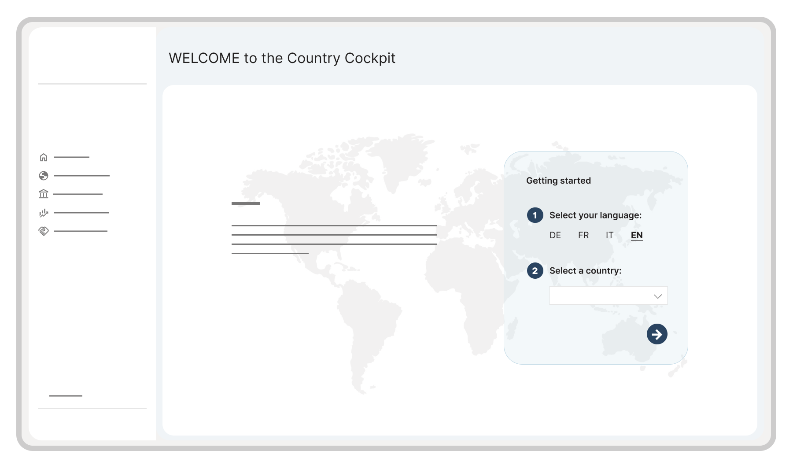

Case Study
Browsing the World's Economy
Transforming static country reports into an interactive public dashboard that makes economic information accessible, searchable and automatically updated.
Note: Due to confidentiality and intellectual property considerations, this case study uses simplified, illustrative visuals. The live dashboard is publicly available and linked below.

Problem
Hello Word.

Manual reports
Each country report had to be created and updated manually in Microsoft Word.
Outdated information
Screenshots and copied data increased the risk of outdated or inconsistent information.
Hard to explore
Users could not easily search, compare or interact with the data.
Solution
Interactive Dashboard replaces PDF.
An interactive Power BI dashboard brings country-specific economic information together in one place, making it easier to explore and keeping the data automatically updated.
One source
Country-specific economic information is brought together in one dashboard instead of being manually assembled in Word reports.
Easy to explore
Users can search, filter and compare the data directly instead of navigating static reports and screenshots.
Up to date
Connected data sources reduce manual maintenance and help keep the information current and consistent.

Impact
From weeks of manual reporting to near real-time insights.
1 month
of manual work eliminated.
100 → 1
reports replaced by a single dashboard.
95%
process automation.
Testimonials
"Anouk [...] brought fresh momentum with her proactive, solution-oriented approach. [...]"
«Anouk joined the project at exactly the right time and
quickly brought fresh momentum with her proactive,
solution-oriented approach. She does not stop at generating
ideas; she develops concrete options and ensures they are
implemented. This enables her to act as an effective bridge
between business stakeholders and developers, realistically
assess technical limitations, and propose suitable solutions.
What was particularly valuable was her strong customer focus.
She consistently applied her Power BI expertise and UX design
skills to create a tool that was both visually appealing and
user-friendly. With her commitment to quality, flexibility,
and dedication, she played a key role in helping the project
achieve significantly more than originally planned.»
"Anouk [...] transformed a rather dry subject into a highly engaging experience. [...]"
"Anouk developed the visual concepts, data visualizations, and prototypes for our digital Country Cockpit. She transformed a rather dry subject into something that is both clear and visually engaging. We are very proud of the result!"
Process
How we got there.
01
Understand
Missing the start of the party.
I joined the project six months after it had officially begun and brought myself up to speed by reviewing the existing documentation and attending briefings. A user workshop had been held early on, but no further user research was planned. Progress had also been limited by delayed access to the data. Key Decision: Rather than simply following the initial plan to reproduce the existing solution, I presented more user-friendly options that showed the team what Power BI could offer while respecting the agreed direction.

02
Design
Cutting Word into pieces.
We reconsidered the report’s structure from the ground up. I literally cut the Word document apart and explored how the information could be reorganized into a more intuitive dashboard experience. Reviewing and refining these changes with subject-matter experts helped us find a structure that was both intuitive for users and accurate from an expert perspective. Key Decision: I replaced text and tables with data visualizations where they made the information easier to understand. Because not every user group could be involved throughout the process, I relied on accessibility, usability and data visualization best practices to guide my design decisions.
Reorganizing the information architecture

Design decisions (hover to discover)

Color with purpose
The color palette builds on the existing federal design system. Numerical values remain neutral to avoid unintended negative associations.
Designing within constraints
Typography followed the federal design guidelines, with Arial as the required typeface. Its familiarity and readability support efficient information scanning. Technical limitations prevented adjustments to letter and line spacing, requiring the design to work within a denser typographic layout.
Guiding the eye
Icons were used sparingly to improve orientation and scanability without competing with the data.
Stay oriented
A persistent sidebar provides clear orientation, while the country filter lets users seamlessly switch between country profiles from any page.
Choosing the right chart
Rather than relying on a single chart type, each visualization was chosen to present the data as clearly as possible. Consistent colors, such as blue for exports and mint for imports, make categories easy to recognize across charts, while neutral tones prevent visual clutter.
Organizing complexity
A consistent card-based layout organizes both information and key indicators into clear, easy-to-scan sections. Key figures are immediately visible, while consistent color coding distinguishes export and import metrics. Displaying data sources directly on each card reinforces transparency and trust.
Exact figures, when needed
Tables complement the visualizations by providing precise values for users who need exact figures. They can also be exported to Excel, supporting further analysis and reporting.
03
Iterate
Good things come in threes.
The project evolved through three major phases: developing an MVP, refining it through multiple rounds of feedback and iteration, and preparing the public release through further testing and improvements. Key Decision: I prioritized the design elements with the greatest impact on usability and developed alternative solutions when technical limitations arose.
A feedback document helped track and prioritize design changes

04
Launch
Going public.
The dashboard had to be ready for the launch of the new website while meeting public-facing quality standards in four languages. Close collaboration with the Power BI engineers was essential throughout the project, but especially during this final phase. Responding quickly, preparing implementation-ready documentation and resolving questions as they arose helped keep the project on schedule.
Simplified version of the Country Cockpit

The Final Product (simplified)